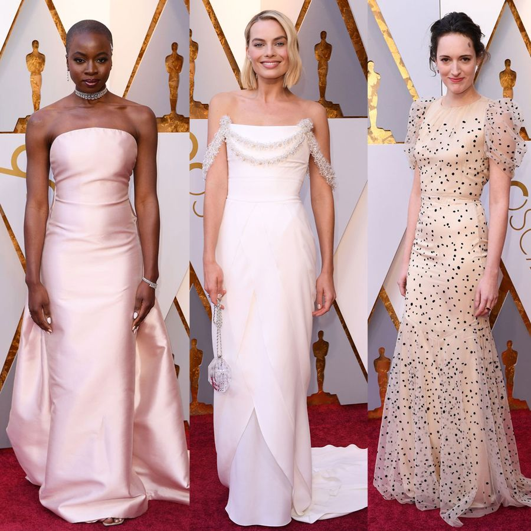

Oscars 2018: Red Carpet Dresses
by Katie Berrington | 6th Mar 2018
Following an awards season where black has been the indomitable trend on the red carpet - as Hollywood's stars have turned out again and again in support of Time's Up and to recognise a society-changing shift within the industry - the Academy Awards saw somewhat of a return to the norm, with swathes of colour and sequins dominating the Oscars 2018 red carpet. Nods to the movement were still present at the biggest night in film, though in a much less obvious form, with some attendees choosing to wear political pins on their lapels, and making references to the current climate in Hollywood as they took to the stage inside. See the Oscars 2018 red carpet dresses and arrivals, below.